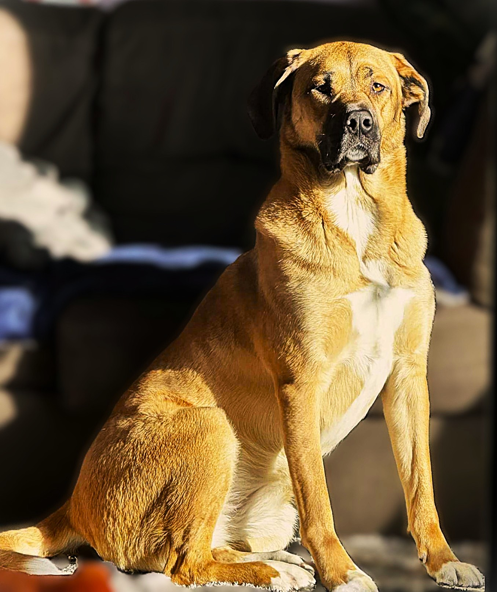

Ralph's Section

Wendy W
Wendy is our rescued dog that has been with us since she was 5 weeks old and she is now 4 years old.
History
October of 2021 when we decided to foster animals, specifically dogs, from a rescue place called "Penny's all breed"
Wendy on the left and Freya on the right
Shortly after they are of adopting age, we decided to adopt Wendy
Breed
Wendy appears to be a bulldog breed but according to DNA testing, she is just a tiny part bulldog
DNA results
-
Belgian Malinois : 35%
-
Shiba inu : 25%
-
German Sheppard: 15%
-
American bulldog : 15%
-
Unknown : 10%
DNA website
Diet
List is rated from favorite to least favorite
-
Boiled chicken breast
-
Sauted ground pork and beef
-
Sweet potato
-
Bacon treats
-
Any human food
Fun facts
-
Wendy is the runt of the litter but weighs 80 Pounds
-
She injured her left pinky toe so its pointing the other direction
-
Wendy is a cat trapped in a dogs body, she hates water!!!